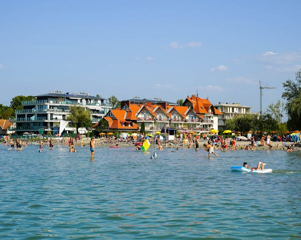
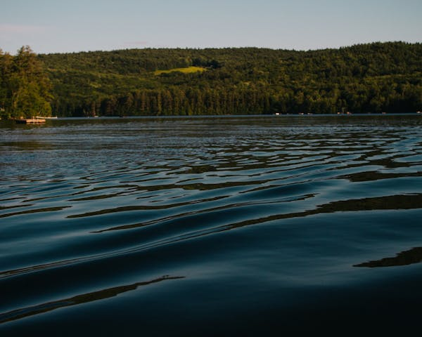

Balaton
A Balaton Magyarország legnagyobb tava, amely turisztikai és üdülő központként is híres. Ez a régió az egyik legnépszerűbb nyári úti cél az országban, különösen a belföldi turisták körében. A Balatont gyakran "magyar tengernek" is nevezik, mivel hatalmas vízfelülete miatt olyan érzést kelt, mintha tengerparton lennénk. Sok látogató keres fel évente a tó környéki strandok, vízi sportok és szórakozási lehetőségek miatt. A víz sekély, lassan mélyül, ami különösen vonzóvá teszi családok és gyermekes nyaralók számára. A tó körül rengeteg szálláshely található, beleértve a kempingeket, apartmanokat és szállodákat is, így mindenki megtalálhatja a neki megfelelőt. Emellett a Balaton környéke híres borvidékéről is, a környező domboldalakon finom borokat termelnek, különösen a Badacsonyi borvidéken. A régió történelmi és kulturális látnivalókkal is bővelkedik, mint például a Tihanyi Apátság vagy a Szigligeti vár. Mindezek mellett, a Balaton körüli kerékpárút is nagy népszerűségnek örvend, amely lehetőséget nyújt arra, hogy a látogatók két keréken fedezzék fel a környéket.

Tisza-tó
A Tisza-tó Magyarország második legnagyobb tava, amelyet mesterségesen alakítottak ki a Tisza folyón az 1970-es években, eredetileg árvízvédelmi és vízgazdálkodási célokkal. Az évek során azonban a tó kedvelt turisztikai és rekreációs központtá vált, különösen azok számára, akik a természet közelségét keresik. A Tisza-tó remek lehetőségeket kínál horgászatra, kajakozásra és egyéb vízi sportokra, így a vízi élet szerelmesei számára ideális úti cél. Emellett a tó környezete rendkívül vonzó a természetkedvelők számára, hiszen gazdag növény- és állatvilága, különösen madárvilága miatt a tó környéke a természetjárók és madármegfigyelők paradicsoma lett. A Tisza-tavi Ökocentrum Poroszlón lehetőséget nyújt a látogatók számára, hogy mélyebben megismerjék a tó és környékének élővilágát. A tó körüli kerékpárút lehetőséget ad arra, hogy két keréken fedezzék fel a tó lenyűgöző tájait és a természet szépségeit. A Tisza-tó különleges vonzereje abban is rejlik, hogy kevésbé zsúfolt, mint a Balaton, így ideális választás azoknak, akik nyugodtabb környezetben szeretnének kikapcsolódni.
Szelidi-tó
A Szelidi-tó egy kisebb, festői tó Magyarország déli részén, Bács-Kiskun megyében, amely csendes, nyugodt környezetet biztosít a látogatók számára. A tó természetes szépsége és kristálytiszta vize vonzza azokat, akik a zajos városoktól távol szeretnének kikapcsolódni. A tó környéke kiválóan alkalmas pihenésre, strandolásra, és különféle vízi sportokra, így kajakozásra és horgászatra is, ami sok család és természetkedvelő számára teszi vonzóvá a területet. A Szelidi-tó vize különösen sós, mivel egy szikes tó, és gyógyhatásúnak is tartják, ami hozzájárul népszerűségéhez. A partján kialakított strandok jól felszereltek, de mégis megőrizték a természetközeli hangulatot, így a látogatók békés, természetközeli élményben részesülhetnek. A tó körüli sétányon és kerékpárutakon remek lehetőség nyílik a tó környezetének felfedezésére, miközben a táj szépségét élvezhetik. A közelben található kempingek és szálláshelyek lehetővé teszik a hosszabb ott-tartózkodást is, így a Szelidi-tó ideális célpont azok számára, akik hosszabb, nyugodt pihenésre vágynak.